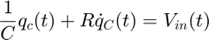
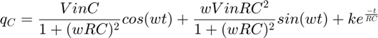
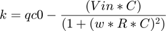
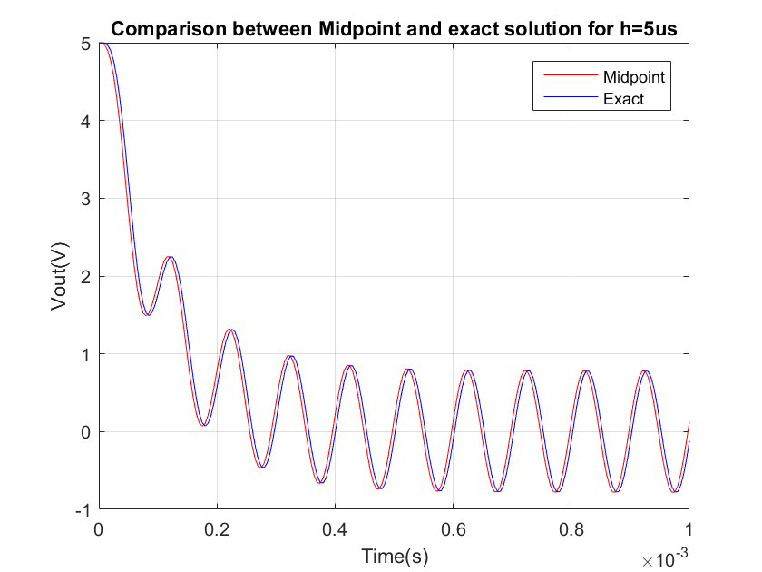
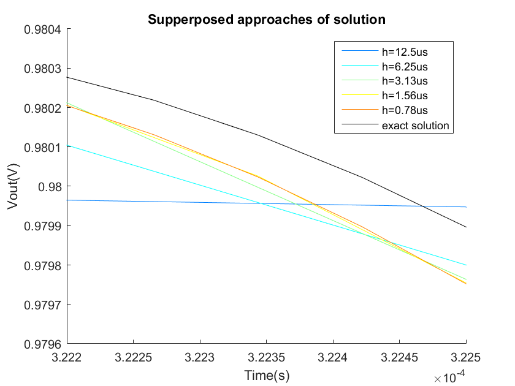
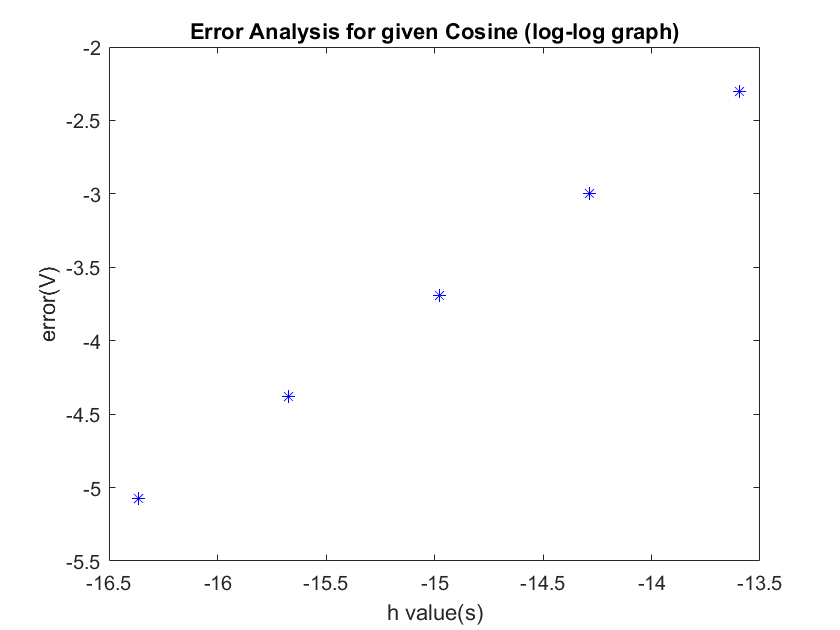

1) RC circuit - Excercise 2
Introduction:
The following script observes the error from the solutions obtained through the midpoint method compared to the exact solution for different values of h. We defined an auxiliary function exactcosine to generate the values of the exact solution for a given t. This auxiliary function is only available within the script. Before analysing the error order we have ploted comparisons of the midpoint versus the exact solution.
Mathematics involved:
The following equation characterizes the system:

For this example the input will be a cosine. The exact answer for any frequency cosine was found, through the integrating factor method is

Where k is determined bye:

Code
function error_script()
%%CONDITIONS R = 1000; C = 100e-9; qc0 = 500e-9; t0 = 0; tf = 0.001; h = 0.000005; T = 100e-6 ; Vin = @(t)5*cos(2*pi*t/T); %%graph midpoint method [Tout,Vout] = midpoint(qc0,h,tf,Vin,R,C); figure(1) plot(Tout,Vout,'-r'); grid on hold on %%graph exact solution Vamp = 5; [Texact,Vexact] = exactcosine(qc0,h,tf,Vamp,R,C,T); figure(1); plot(Texact,Vexact,'-b'); grid on title('Comparison between Midpoint and exact solution for h=5us') xlabel('Time(s)'); ylabel('Vout(V)'); legend('Midpoint','Exact');
%*Error Analysis* % To analyze the incurred error order we will find the maximum error in the % midpoint solution for a given value of h. At the same time we will plot % these solutions to zoom in the graph and observe the error, as a means of % visually understanding the impact of h. error_iter = 5; error = zeros(1, error_iter); h=zeros(1, error_iter); CM=jet(error_iter); %Create colour scheme for the different midpoint solutions figure(2); hold on; axis([3.222e-4, 3.225e-4,0.9796 0.9804]) % Constraint the axis to the relevant area for l = 1:1:error_iter h(l)=0.00001*2^-(l+2); [Tout,Vout] = midpoint(qc0,h(l),tf,Vin,R,C); [Texact,Vexact] = exactcosine(qc0,h(l),tf,Vamp,R,C,T); error(l)=max(abs(Vout-Vexact)); plot(Tout, Vout, 'color', CM(l,:)); end plot(Texact, Vexact, 'color', 'k'); %Also add the exact solution to the comparison title('Supperposed approaches of solution'); xlabel('Time(s)'); ylabel('Vout(V)'); legend('h=12.5us','h=6.25us','h=3.13us','h=1.56us','h=0.78us','exact solution');
%The graph clearly shows how decreasing the value of h improves the %solution figure(3); plot(log(h), log(error), 'b*'); title('Error Analysis for given Cosine (log-log graph)') xlabel('h value(s)'); ylabel('error(V)') function [Texact,Vexact] = exactcosine(qc0,h,tf,Vin,R,C,T)
t = 0;
Nsteps = round((tf-t)/h); %% number of steps to take
Texact = t:h:tf;
Vexact(1:Nsteps) = 0;
%%store intial condition
Vexact(1) = qc0/C;
w = 2*pi/T;
k = qc0 - (Vin*C)/(1+(w*R*C)^2);
for i =1:Nsteps qc = (Vin*C)/(1+(w*R*C)^2)*cos(w*t) + (w*Vin*R*C^2)/(1+(w*R*C)^2)*sin(w*t) + k*exp(-t/(R*C)) ; t = t+h; Vexact(i+1) = qc/C; end
end
 end